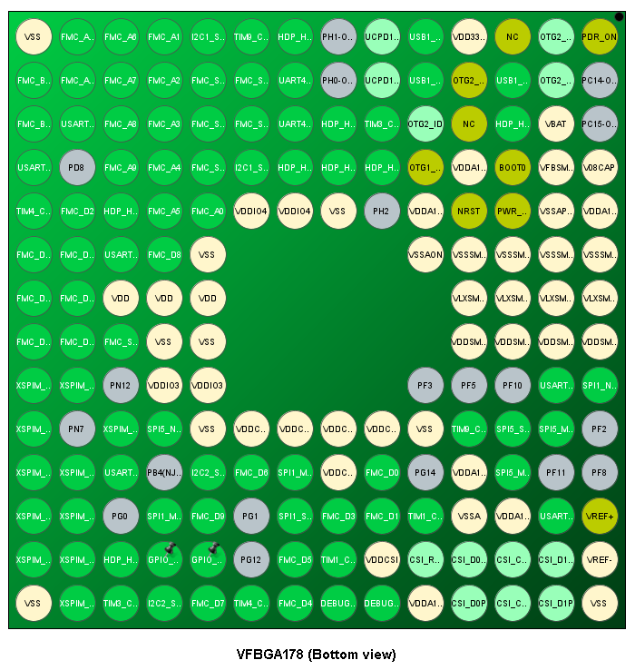

Design Notes
Ballout
- This section was completed after wiring the Power and Analog units, as well as the NOR Flash unit in the schematic. However it is important, so it'll be at the top.
- There's a spreadsheet for the BGA pinout, can be found here. It has all the balls, but the ones we need have been checked off, and most have signals labeled next to them.
- The pinout was generated in STM32CubeMX, and the configuration has been stored in
Software/.
- The ballout from the CubeMX's UI is shown below. It isn't very detailed in the photo, so consulting the spreadsheet (or better, git pull and open in CubeMX) is highly recommended.

The STM32's connection with the main board will be through a set of two 18 pin header pins on each side of the stm32. These pins will be as follows, top to bottom:
| Left | Right |
|:----:|:-----:|
| 5V | 5V |
| GND | GND |
| UART1-TX | UART2-TX |
| UART1-RX | UART2-RX |
| UART3-TX | UART4-TX |
| UART3-RX | UART4-RX |
| SPI1-MISO | SPI5-MISO |
| SPI1-MOSI | SPI5-MOSI |
| SPI1-CS | SPI5-CS |
| SPI1-CLK | SPI5-CLK |
| I2C1-SDA | I2C2-SDA |
| I2C1-SCL | I2C2-SCL |
| TIM1-CH1 | TIM3-CH2 |
| TIM1-CH2 | TIM3-CH3 |
| TIM4-CH1 | TIM9-CH1 |
| TIM4-CH2 | TIM9-CH2 |
| 5V | 5V |
| GND | GND |
- Putting 5V and ground on each side promotes better current flow through the ground planes I believe. This will allow charges to flow in the direction to the nearest ground.
- 5V pins will have reverse polarity protection diodes.
- All pins are technically GPIO pins, but they can also be used specifically for the tasks displayed. The timer pins are capable of PWM, and analog read upto 1v8.
Power
Analog Unit
- USB:
- DP and DM are differential pairs, with 90 Ohms between them, or 45 Ohms each between them and ground.
- Length matching within a pair should be within 2mm, and maximum trace length no longer than 200mm.
- Ideally route DP and DM over a ground plane.
- Using the ECM42-40A100N6 to filter noise.
- Both CC pins have been pulled down. To change configuration, unsolder R24 or R25.
- USB Power Details:
- When connected to a host via USB C, VBUS will be able to power 5V via the diode D5.
- When acting as a USB host (
EN = 1), the NMOS will enable VBUS to be powered by 5V.
- If connected to a host, but also powered by 5V rail, VBUS and 5V will be powered separately, but to the same voltage, so theoretically I_D should be 0.
- Same situation as above if acting as a host, and for some reason a device supplies 5V on VBUS
- If, for any reason, there's a flaw in this design, unsoldering D5 should fix it, but external powering capabilities will vanish.
- CSI
- The 3 pairs of P and N pins for the CSI peripheral are also differential pairs. There's 100 Ohms impedance between them, and 50 Ohms between each of them and ground.
- Length matching within a pair must be within 0.1mm, and between clock and data pairs 2.5mm.
- Route over a ground plane.
- Trace lengths must not exceed 200mm.
- General
- NRST is internally pulled up via 40k Ohms. Thus, the button debouncing cap will have a H-L time constant of 1ms, and L-H of 4ms.
- NRST will also be connected to a GPIO, which one is to be determined.
XSPI NOR Flash
- Pin configurations
- Uses pins PN[0..12]
- CS is active low, on pin PN1
- CLK is on PN6
- DQS (Data Strobe) is on pin PN0
- Serial IO pins are on PN[2..5] and PN[8..11]
- 3V supply by separate LDO using label VDD_OCTO
- Capacitors should be placed close to supply pins, in pairs of 4.7u and 100n.
- SIO pins to be length matched to within 10mm (I say 1-5mm), and impedance matched to 50 Ohms between trace and ground.
- Differential pairs must have trace impedance of 100Ohms between them.
- Trace capacitance not to exceed 20pF, and trace length not to exceed 120mm (use resistor termination otherwise; not doing this).
- External push button to reset the Flash. Once development is complete, R28 can be unsoldered to prevent accidentally deleting data.
- NRST connected to the reset button through a diode.
FMC SDRAM
- Pin configurations are all over the place, can be seen clearly in the schematic.
- Capacitors will be placed close to the BGA, on the back side.
- Clock trace is 32.3mm long (may change), so all data/address/control traces must be between 22.3 - 42.3mm to reduce skew. There are no diff pairs. Max trace length is 2 inches (50mm) according to IS42S Layout Guide.
- Due to the structure of the STM32, and the fanout as well, each trace of data byte 2 has a long underside run. According to STM32 App Note, place 10nF stitching caps along vias.
- SDRAM data pins are swapped within a byte. The order from pins 0-7 are 1, 3, 4, 5, 7, 6, 0, 2, and for pins 8-15 are 9, 15, 14, 13, 12, 8, 11, 10.
- Spreadsheet with pinout, trace connections, and length matching details, can be found at this google spreadsheet.
PCB Design
- Impedance controlled traces:
- For 50 Ohms single ended, 0.1565mm
- For 45 Ohms single ended, 0.1933mm
- For 100 Ohms diff pair, 50 Ohms single ended, 0.144mm wide, 0.37mm spacing, > 2mm gap to ground plane
- For 90 Ohms diff pair, 45 Ohms single ended, 0.1808mm wide, 0.4mm spacing, > 2mm gap to ground plane
- I'm putting 2.5mm mounting holes on the corners of the PCB, and the edges are rounded with a 4mm radius.